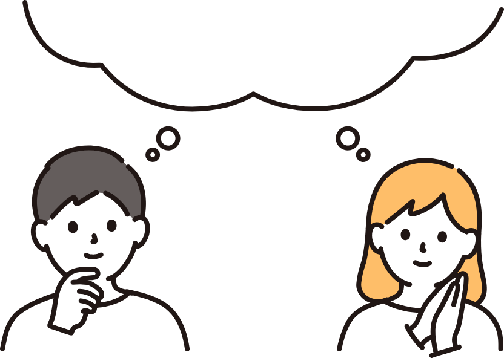

家庭照顧
｜失智症家庭照顧者遇到當下不知道怎麼處理的照顧問題，用失智症 AI 小幫手對談釐清；需要較完整的照顧建議與服務資訊時，到 iSupport@Taiwan 失智症幫幫我查看。
參與方式
- 試用兩項工具約 1 個月，包含問卷與一次約 1 小時的訪談
- 完成全程可獲研究參與費 2,000～2,250 元
- 臺北市、新北市的照顧者優先
招募中｜家庭照顧者、居家服務機構
國科會研究計畫，由國立臺灣科技大學、臺北醫學大學與元智大學共同執行。我們在家庭與居家服務兩個照顧現場，邀請照顧者與居家服務機構試用失智照顧的數位工具。
在失智症照護上，家庭照顧者與居家服務機構各自面對不同的困境。

家人拒絕洗澡、突然焦躁，或一直說要回家時，您可能只想先知道：現在該怎麼做？
個案拒絕洗澡、黃昏時躁動、反覆要求回家。居服員獨自在個案家中，很難即時找到可靠的處理方式。
服務中的問題多靠口頭或通訊軟體零散回報，督導不容易看出哪些個案、哪類問題需要優先介入。
有效的照顧方法散落在不同居服員身上，交接時資訊不完整，新進人員也難以累積失智照護知識。
遇到當下不知道怎麼處理的照顧問題，用失智症 AI 小幫手對談釐清；需要較完整的照顧建議與服務資訊時，到 iSupport@Taiwan 失智症幫幫我查看。
居服員在服務現場用失智症 AI 小幫手提問，服務後回報；督導透過 iTrace 服務追蹤平台整理提問與回報，規劃教育訓練，讓機構的照顧經驗留下來。
「高齡失智照護產業的人本智慧升級」是國科會研究計畫，由國立臺灣科技大學、臺北醫學大學與元智大學的研究團隊共同執行。計畫在家庭與居家服務兩個照顧現場，研究數位工具如何協助失智照顧。